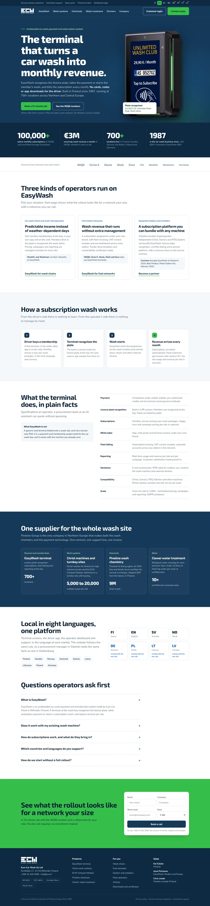

hi jouni
thanks for thinking of me for ecw.fi!
one project: a new ecw.fi, in eight languages, that AI assistants recommend to car wash operators.
You already have the hardest part: a product that OKQ8 runs 100,000 subscriptions on, 700 live sites, and a market that is opening up in Poland, the Baltics and Germany. The website doesn't say any of that yet, in any language, and when an operator asks ChatGPT which car wash payment system to look at, the answer names Superoperator and DRB. So I made you this page, with a concept homepage you can click through. The short version: one project with three workstreams, redesign, localisation and AI visibility, live in about twelve weeks and measured on qualified leads.
three reasons the website is the next move
Before the audit and the plan, the part that decides whether any of this is worth doing. ECW is expanding into markets that buy in their own language and research with AI. Today the website serves neither.
Poland, the Baltics and Germany are not English-first markets
A myjnia owner in Poznań, a Tankstelle operator in Bavaria or a fuel network's procurement team in Riga search, read and tender in their own language. An English page isn't "good enough" for them; it's a page they never open. Outreach can start a conversation, but the first thing a prospect does after a cold email is look you up. In Polish.
Localised pages aren't a translation line item. They are how a Finnish company shows up as a local option in eight markets, with the local reference, the local phone number and the local words.
Buyers ask ChatGPT and Google before they ask a salesperson
"Which car wash payment system supports subscriptions?" "Superoperator alternatives?" "Myjnia abonament system płatności?" Those questions get answered today, by superoperator.com, drb.com and paygasus.com. ECW is in 0% of those answers. Not ranked low. Not there. A site that assistants can't read or quote is, for this part of the buying process, the same as having no site.
A fast, factual, machine-readable site in eight languages puts EasyWash into the shortlist before Jouni ever gets a reply.
The best references in the industry are not on the site
100,000 subscriptions, €3M a month, Neste, Circle K, Shell, Best Product in Warsaw, the first self-service subscription in Latvia. These numbers close deals in cold emails every week. On ecw.fi they don't exist, so a prospect who checks the site after that email sees a 2019 page selling four products at once, and the credibility built in the email drains away.
The website becomes the salesperson that works in eight languages, 24 hours a day, and says the same things the sales team does.
what ecw.fi says today, and what it doesn't
From the public site and the work we've already done together on outreach. If I've got something wrong, tell me and the plan changes with it.
what AI assistants see when they look at ecw.fi
I ran ecw.fi through an AI visibility audit on 9 October: 13 technical checks, around 100 buyer prompts across the main assistants, and the pages they cite instead of yours.
AI gets what you are right only half the time
Asked directly about Euro Car Wash, assistants file you under "car wash equipment distributor" or "generic car wash POS" as often as under payment and membership systems. The homepage and about page never state the category, so they guess.
Fix: say "unattended car wash payment and subscription system" in the first line of the homepage, the about page, the title tags and the schema. The concept homepage below already does.
no page explains the category, so AI learns it from competitors
There is no "what is an unattended car wash payment system" page and no guide on running car wash memberships. Assistants build their understanding of the category from superoperator.com (13 citations), drb.com (11) and paygasus.com (8). eurocarwash: 0.
Fix: a small set of educational pages written from your 37 years in the industry, with the OKQ8 numbers as the worked example. This is what moves organic inclusion off 0%.
adjectives where AI wants facts
"The most used payment system in car washes in Scandinavia" and "quadruple your turnover" read as advertising, and assistants skip advertising when they form capability associations. "Contactless, licence plate recognition, IP55, works with Christ and PDQ" gets quoted.
Fix: every product page rewritten as checkable facts. This is the main reason the capability mention rate sits at 11%.
four checks failed, all quick to fix
No llms.txt. No FAQ schema. robots.txt exists but returns a web page instead of a text file, so crawlers can't read it. The site isn't in the latest Common Crawl, which several assistants train and search on.
Fix: all four in week one, on the current site, before the redesign. No reason to wait.
every page is slow for a machine
Average response 2.1 seconds across the 15 pages checked. /why-us 2.4 s, /about-us 2.4 s, /features 2.3 s, /pricing 2.3 s. AI fetchers abandon requests well before that.
Fix: the new site is built to a speed budget of under one second, with no page builder in the way.
the comparison slots are taken
When an operator asks for a comparison of car wash payment or membership software, the answers name Superoperator, DRB, Rinsed and Liquid Barcodes. You're not in the set, so there's nothing for the assistant to compare.
Fix: "EasyWash vs Superoperator" and "EasyWash alternatives" pages written neutrally, plus listings on the directories those answers cite.
the foundation passed
HTTPS, canonical tags, a sitemap, server-side rendering, a sensible heading structure, meta descriptions, Organization and Article schema, and every AI crawler (GPTBot, ClaudeBot, PerplexityBot, Google-Extended) allowed in. Nothing is blocking assistants from reading the site.
So this isn't a rescue. It's giving the assistants something worth repeating, in eight languages.
a concept you can click through
Built in your colours, with your terminal and your numbers. The copy is a first draft and the links are placeholders; the structure is the point. Open it in a new tab and scroll.

three workstreams, one project
Redesign, localisation and AI visibility are usually sold by three different suppliers who never meet. Done together, each one makes the other two cheaper: the facts are agreed once, then written for each market in a form that assistants can quote.
one site, one category
EasyWash first, the group second. Every page says what ECW is in the same words, in the title, the first line and the schema. The current four-products-at-once homepage becomes one story with three doors.
numbers before adjectives
OKQ8, Neste, Corrimex, the Warsaw award, the zero-emission sites. Named customers and checkable facts on every page. Nothing an assistant would flag as advertising.
local, not translated
Each language gets a glossary first (a Polish operator says "myjnia bezdotykowa", not a translation of "self-service jet wash"), a native reviewer, local references and a local phone number. Same facts in every language.
built to be cited
Fast pages, FAQ and product schema, llms.txt, author and date on every article, and the educational pages that teach assistants the category with EasyWash as the example.
About the technology. The site runs on WordPress today. I'd keep WordPress if your team wants to edit pages themselves, with a lighter theme and no page builder, or move to a static site if speed and simplicity matter more. We decide that in week one, together with your IT contact. Either way the speed budget is under one second per page.
twelve weeks to launch, then three months of AI visibility
Quick fixes go live on the current site in week one, so nothing waits for the new one. Click through the phases.
foundations, with the quick fixes live
Agree what the site says and how it's built, and fix on the current site what the audit already found.
ships in these weeks
- The four failed checks, fixed on ecw.fi today. A working
robots.txt, anllms.txt, FAQ schema on the homepage, and a submission to get the site into Common Crawl. - The category statement, added to the current homepage and about page. One sentence, so assistants start learning the right category while the new site is being built.
- Site map and page list. EasyWash, the three buyer pages, Christ, Pineline, Clewer, the compliance download hub, articles, company, contact, in every language.
- Messaging decisions. The category words, the proof points per page, the "what EasyWash is not" line. Signed off by you and Esa before any design.
- Technology decision with your IT contact. Lighter WordPress or static site, hosting, forms, analytics, and the redirect plan for every current URL.
- The AI baseline. Around 50 real operator questions in ChatGPT, Perplexity, Google AI Overviews and Copilot, in English, Finnish, Swedish, Polish and German. Are you mentioned, cited and described correctly, and who is instead?
plus the baseline report and the messaging one-pager, walked through on a call.
Two hours with Jouni and Esa for messaging, 30 minutes with your IT contact, access to the current WordPress and analytics.
build the English site
Design and write every page once, in English, in the form that works in every language and that assistants can quote.
ships in these weeks
- Design system from the concept homepage. Your navy, the green of the terminal, Exo 2 for headings. Components reused on every page, so the eight languages don't need eight designs.
- Homepage and EasyWash page. The concept, finished: real photos, the specification table, the FAQ, the form.
- Three buyer pages. Wash chains (WashXL, Washman), fuel networks (OKQ8, Neste, Circle K) and dealers and installers (the Superoperator counter, Corrimex, the revenue share). Each with its own call to action.
- Product pages for the group. Christ wash systems and the Compact Module, Pineline chemicals with the ADR-free argument, Clewer water treatment with the zero-emission sites.
- Compliance download hub. Datasheets, ADR-free certificates, Nordic Swan, ISO 9001 and 14001, EcoVadis. Today these are sent by email one at a time; procurement teams and assistants want them on a page.
- Forms that qualify. "How many sites?" and "how did you hear about us?" on every form, routed to the right salesperson by country.
- Speed, schema and tracking. Under one second per page, Organization, Product and FAQ schema, analytics with lead tracking to the CRM.
in English, reviewed with you page by page as they're ready, not all at the end.
Product photos and the certificates, one review round per page, and a yes or no on the dealer revenue share wording.
eight languages, each one local
Finnish, Swedish, Norwegian, German, Polish, Lithuanian and Latvian versions of every page, written for the operator in that market.
ships in these weeks
- A glossary per language first. The words operators and procurement teams actually use for wash types, subscriptions, terminals and chemicals. The Polish one already exists from our outreach work.
- Drafts co-written with AI from the English pages and the glossary, then reviewed by a native speaker per language. Not a translation agency; someone who knows how a car wash owner in Vilnius talks.
- Local proof on every version. OKQ8 and Shell for Sweden and Norway, Neste for Finland, Corrimex and the Warsaw award for Poland, the first self-service subscription model in Latvia for the Baltics.
- Local contacts. The right salesperson and phone number per market, including the Swedish number for Pineline.
- Language tags that point to real pages. Correct hreflang for all eight, one sitemap per language, and no half-translated pages in the index.
- Machine-readable in every language. Schema, FAQ and llms.txt per language, so assistants answering in Polish find the Polish facts.
roughly 85 pages across seven languages, released language by language as each review finishes.
A name per market who can answer "is this how our customers say it?" in a 30-minute review. I bring the native reviewers.
launch, then make the assistants notice
Go live cleanly, then do the content and listings work that takes organic AI inclusion off zero.
ships at launch
- Redirects for every old URL, in all four current languages, tested before and after.
- Bing Webmaster Tools and IndexNow. ChatGPT search runs on Bing, and Copilot is what procurement teams at Microsoft-based companies use.
- Launch posts for LinkedIn from Jouni's and Esa's profiles, pointing at the buyer pages.
ships in the three months after
- The educational pages the audit asked for. "What is an unattended car wash payment system", "how to run car wash memberships and recurring revenue", "car wash subscription pricing in the Nordics", each with EasyWash and OKQ8 as the worked example.
- Comparison pages. EasyWash vs Superoperator, EasyWash alternatives, and the dealer's view of Washtec bundling. Neutral, factual, cited to the competitor's own site.
- Outside sources. Listings on the directories and comparison pages assistants cite today, plus G2 and Capterra profiles so there's a review footprint at all.
- The same 50 questions, re-run every month in five languages, compared with the baseline. Mentions, citations and how you're described.
a month across languages, weighted to the ones that move the question set.
A monthly report with the AI re-run, leads by source and language, and the next month's list.
eight languages, each with its own reason
The four you have get rewritten from the new English. The four new ones follow the markets you're already selling into.
Finland, home marketNeste, the zero-emission reference sites, Kai's contacts. Also where Pineline's chemical story starts.
International buyers and the assistantsFor Nordic head offices that work in English and for AI answers, which still lean on English sources. Not the master the others are translated from: each language is written for its own market.
Sweden, 2026 priorityOKQ8's 100,000 subscriptions, 200+ Pineline stations, the Würth delivery gap. Inköpschef and Driftsansvarig as the readers.
Norway100+ Shell and Esso sites on Pineline, Circle K subscriptions in the market. The reader is a category or procurement manager.
Germany and AustriaThe dealer channel: independent Christ and WashTec-free installers who need something to bundle. Geschäftsführer and Vertrieb as the readers.
Poland, via CorrimexBest Product at Petrol Station 2025, the EKOstatuetka award. Myjnia operators and the fuel networks (Orlen, Moya, Circle K PL). Glossary already written.
LithuaniaFuel networks and the self-service wash chains that are consolidating. Same pages as Latvia, local references where they exist.
LatviaEurope's first self-service car wash subscription model launched here in 2025. That's the headline of the Latvian site.
Estonian and Danish are easy to add later with the same process, if the markets ask for it. I'd rather launch eight languages that are properly local than ten that are translated.
what it takes to be the answer
Each item below answers one finding from the audit. Most of them are built into the new site, so they don't cost extra; the rest is the content work after launch.
how we'll know it's working
A new site is judged on what it brings Jouni to call. Everything else is an early sign.
qualified leads from the website
Contact requests from operators with three or more sites, fuel networks and dealers, in any of the eight languages, who found you through Google or an AI assistant.
Counted two ways, because analytics alone misses most AI traffic: the CRM source, and what people write when the form asks.
what moves before leads do
- AI readiness score, from 69 to above 90 at launch
- Category placement, from 50% to every time
- Mentions and citations across the 50 questions, per language
- Page speed under one second on every page
- Non-brand clicks to the buyer pages, per language
- Compliance downloads by procurement teams
the first wins to share
- Impressions in Google and AI answers in the new languages
- The first Polish, German or Baltic contact request
Targets get set against the baseline in week two, once we've seen the numbers per language.
the same approach, on a site i rebuilt this summer
Hello Customer is a B2B software company selling to procurement-heavy buyers in three languages. I rebuilt their site with search and AI assistants in mind from the first page, in English, French and Dutch, and measured it seven weeks in.
Three languages on every page, written from native glossaries and reviewed line by line. The same process scales to eight.
read the hello customer case study →Claudecustomer success manager · now an opportunity
By asking an AIvoice of customer lead · translated from French
Found online while searching for a Belgian/European NPS providerinsurance company · now an opportunity
And for ECW specifically: I've written your outreach, built your German and Polish prospect lists and the Polish glossary. I know the ICPs, the OKQ8 story and the dealer angle before the project starts.
why work with me
no onboarding month
The ICPs, the personas, the Superoperator story, the Würth gap, the Polish vocabulary. We've been working on your outreach; the site is the next step of the same work.
design, copy, languages and the technical side
I build the pages, write the copy, run the native reviewers and do the schema and speed work myself. AI helps me move fast; I check every page before it goes live.
no three suppliers who never meet
A design agency, a translation agency and an AI visibility consultant would each charge for understanding the other two. Here it's one brief and one person.
leads, not a launch party
The site is judged on contact requests Jouni wants to call, by language, every month. The monthly report is short and honest.
real attention
I only work with a few clients at a time, so you get quick answers and a site I keep thinking about between meetings.
traffic for the new pages
Once the buyer pages exist, LinkedIn ads to category managers and dealers in Sweden, Poland and Germany have somewhere to land. That's a separate conversation, and one I'm happy to have.
let's talk scope and numbers on a call
Each workstream is scoped on its own, so you can start with the redesign and add languages and AI visibility as the markets open, or do all three at once. Click through the concept homepage, show it to Esa, and send me whatever comes up.